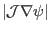
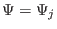
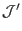
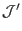

Once
 is known, one can use Eq. (188) to
calculate the value of  of a point by performing the following line
integral:
of a point by performing the following line
integral:
where the line integration is along the contour
. It is here
that the positive direction of can be selected. It is obvious that
the sign of the Jacobian of the constructed coordinates may be different from
the
 appearing in Eq. (189), depending on the positive
direction chosen for the poloidal coordinate. Denote the Jacobian of the
constructed coordinates by
, then
appearing in Eq. (189), depending on the positive
direction chosen for the poloidal coordinate. Denote the Jacobian of the
constructed coordinates by
, then
This sign should be taken into account after the radial coordinate and the
positive direction of the poloidal angle are chosen. In GTAW code, I choose
the positive direction of to be in anticlockwise direction when
observers look along the direction of
 . To achieve
this, the line integration in Eq. (189) should be along the
anticlockwise direction. (I use the determination of the direction matrix, a
well known method in graphic theory, to determine the direction from the given
discrete points on a magnetic surface.)
. To achieve
this, the line integration in Eq. (189) should be along the
anticlockwise direction. (I use the determination of the direction matrix, a
well known method in graphic theory, to determine the direction from the given
discrete points on a magnetic surface.)
In order to evaluate the integration in Eq. (189), we need to select
a zero point for coordinate. The usual choice for
 line
is a horizontal ray on the midplane that starts from the magnetic axis and
points to the low filed side of the device (this is my choice in the GTAW
code).
line
is a horizontal ray on the midplane that starts from the magnetic axis and
points to the low filed side of the device (this is my choice in the GTAW
code).
Subsections
yj
2018-03-09